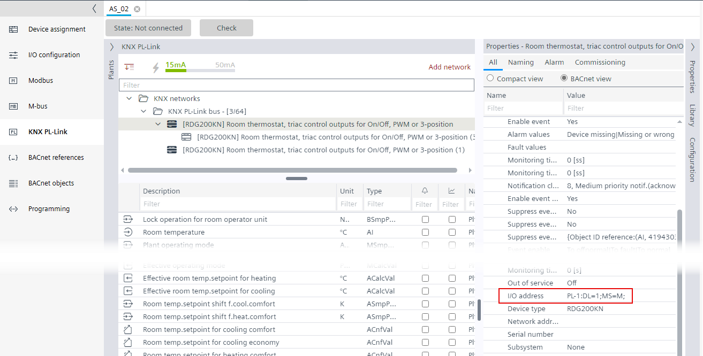
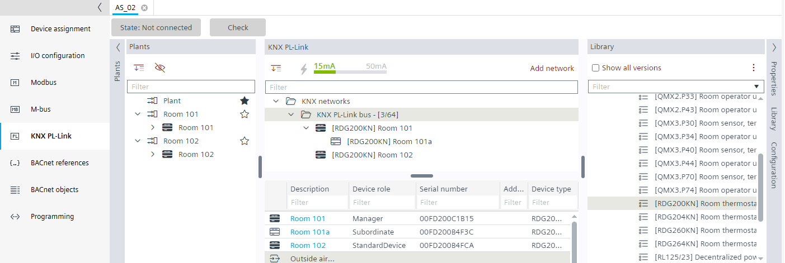

添加并重命名 RDG2 管理器设备
- A RDG200KN, RDG204KN, RDG260KN, RDG264KN KNX PL-Link device must be configured.
- Go to Building > Building structure.
- Right-click a device and select Go to engineering.
- Open the KNX PL-Link task.
- In the KNX PL-Link area, click Add network. Info: Depending on the used device, up to 5 networks for Modbus, M-bus, KNX PL-Link are supported.
- Select the Library view on the right.
- From the Field devices > KNX PL-Link folder, drag a RDG2 device from the library to the KNX PL-Link bus network. The RDG2 is added to the plant, marked as favorite . If required, it can be moved to another plant. Alternatively, drag the RDG2 directly to any plant.
Notes:
- Up to 64 KNX-PL-Link devices (manager and subordinate devices) per PXC4/5/7 are supported.
- Up to 10 KNX PL-Link devices without additional KNX PL-Link power supply are supported.
- Depending on the Desigo PXC4/5/7 device version, only the corresponding RDG2 library is available in the library folder. - Right-click the device and select Rename.
- Enter the name for the device, for example, Room 101.
- The RDG2 manager device is added and renamed.
Check the I/O address
- Select the device.
- Select the Properties view on the right.
- Select the BACnet view option.
- Select > Ctr to open the detail parameters.
- Check the I/O address, for example,
PL-1:DL=1;MS=M;(M for manager device).
Note:MS=Mis only added to the address string if this RDG2 device has a subordinate (only then is RDG2 device a manager).
Verify the device role of RDG2 devices
- In the KNX PL-Link area, select KNX PL-Link bus.
- In the Device role column, the device role of the RDG2 devices is displayed.
Note: A standard device does not have any subordinate devices.